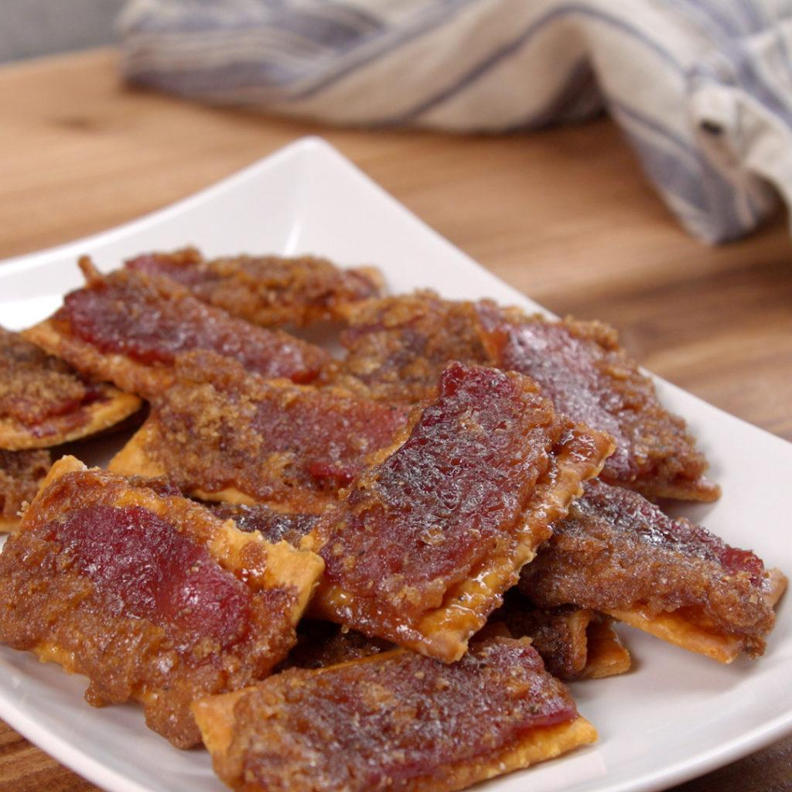

Bacon Crackers

Description
These sweet, crisp bacon and cracker treats are simple to make and outrageously delicious!
Ingredients
- 1 package buttery round crackers
- 1 pound sliced bacon, but into thirds
- 1 pound brown sugar
- Preheat oven to 250 degrees F
- Arrange the crackers in a single layer on a large baking sheet. Top each cracker with 1/3 slice bacon, and sprinkle desired amount of brown sugar over all.
- Bake 1 hour in the preheated oven, or until browned and crisp. Serve warm.